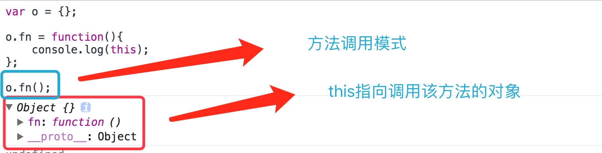

函数的四种调用模式
函数模式
函数的定义方式
申明式
function fn(){}表达式式
var fn = function(){};Function
var fn = new Function();
函数模式调用函数
调用方式:
函数名(参数)fn();函数模式调用下的
this:函数模式下的this对象就是Window对象
特例:任何自调用函数(立即执行函数)都是函数模式
// 自调用函数 (function(){ console.log(this); })();

方法模式
- 概念: 方法本身就是函数,但是方法不是单独独立的调用,而是通过一个对象引导调用
调用方式:
对象.方法名(参数)var o = {}; o.fn = function(){ console.log(this); }; o.fn();方法模式调用下的
this:方法模式调用下的this就是引导调用该方法的对象

注意
方法调用一定要有宿主对象。方法一定是某个对象的方法,此对象可以是任何对象。
面试题
var length = 10;
function fn() {
console.log( this.length );
}
var obj = {
length: 5,
method: function ( fn ) {
fn();
arguments[ 0 ]();
}
};
obj.method( fn, 1 );
// 结果: 10 2
// 分析:
// 1. 第一个fn()很明显是函数调用模式,内部this指向window对象,
所以window.length指的就是全局变量length 打印10
// 2. 第二个arguments[ 0 ](): arguments是伪数组对象,arguments[ 0 ]里面是第一个参数,
即传入的函数体,arguments[ 0 ]() 开始调用函数.相当于伪数组对象的第0项绑定的是一个函数,
所以调用该函数时,里面this指向的宿主对象就是伪数组arguments,
而arguments正好有length属性,代表的是传入实参的个数,所以打印2
构造器模式
调用方法:使用
new关键字引导function Person(){ this.name = 'zs'; this.age = 18; this.gender = '男' }; // 构造器模式调用 var p = new Person();执行步骤:
- 使用
new运算符申请创建对象 - 创建出来的对象传递给构造函数的
this 使用构造函数对其进行初始化
使用new 创建对象 和 {} 基本一样,只是原型链结构不同 {}: 对象.__proto__ === Object.prototypr new 构造器(): 对象.__proto__ === 构造器.prototype
- 使用
返回值:
- 如果不写
return语句,那么 构造函数 默认返回this - 如果构造函数中写上
return,并紧跟基本类型,则忽略基本类型数据,返回this
- 如果不写

- 如果构造函数中写上
return,并紧跟引用类型,则构造函数返回该引用类型数据,忽略this
面试题
function Foo() {
getName = function(){ alert(1); };
return this;
}
Foo.getName = function() { alert(2); }; // Foo绑定了getName
Foo.prototype.getName = function() { alert(3); }; // Foo原型绑定了getName
var getName = function() { alert(4); }; // 全局getName 绑定了函数
function getName() { alert(5); }
/******************************************/
Foo.getName(); // 2
// Foo的静态方法getName
getName(); // 4
// 全局对象下的方法getName
Foo().getName(); // 1
// 1. 给getName重新赋值,因为函数内部没有getName,所以修改的是全局getName
// 2. Foo函数调用模式 内部返回的this是window
// 3. 所以最终相当于 window.getName() === > 1
getName(); // 1
// 全局对象下的方法getName
new Foo.getName(); // 2
// Foo的静态方法getName 使用new构造函数模式调用
new Foo().getName(); // 3
// 1. 先 new Foo();
// 2. 然后调用new出来的对象的getName方法
// 3. n查找到实例对象的原型中的getName ==> 3
new new Foo().getName(); // 3
// ==> new (new Foo()).getName()
// 1. new Foo() ==> Foo的实例对象(假设叫f)
// 2. 实例对象f的getName属性 ==> 查找到了原型中的函数 即f.getName === function() { alert(3); }
// 3. new f.getName() ==> new function() { alert(3); }() ==> 构造函数模式调用
结合性:
1> 如果构造函数没有参数, 可以省略 圆括号 var p = new Person; 2> 如果希望创建对象并直接调用其方法 ( new Person () ).sayHello() -> 可以省略调整结合性的圆括号 new Person().sayHello() -> 如果想要省略构造函数的圆括号, 就必须添加结核性的圆括号 (new Person).sayHello()
上下文模式
概念: 在不同环境下的不同调用模式,就是统一一种格式,可以实现函数调用模式和方法调用模式
目的: 借用方法
apply形式
基本使用
语法:
函数名.apply(参数)function foo () { console.log( this ); } var o = { name: 'zs' }; // 如果需要让函数以函数模式调用, 可以使用 foo.apply( null ) 或 foo.apply() // 如果希望方法模式调用, 需要提供一个宿主对象 foo.apply( o );特点: 使用这种方式调用,不会污染宿主对象,即不需要宿主对象必须包含该方法

带参数的函数使用apply调用
使用 apply 进行调用, 如果函数是带有参数的. apply 的第一个参数要么是 null 要么是对象
如果是 null 就是函数调用, 如果是 对象就是 方法调用, 该对象就是宿主对象. 后面紧跟一个数组参数, 将函数的参数依次放在数组中.
function foo ( num1, num2 ) {
console.log( this );
return num1 + num2;
}
// 函数调用模式
// var res1 = foo( 123, 567 );
// 方法调用
var o = { name: 'jim' };
// o.func = foo;
// var res2 = o.func( 123, 567 );
// 改写成 apply 形式
var res1 = foo.apply( null, [ 123, 567 ] ); // 函数调用
var res2 = foo.apply( o, [ 123, 567 ] ); // 方法调用
案例
var t = document.getElementsByTagName,
arr = [];
arr.push.apply( arr, t.apply( document, [ 'p' ] ) );
arr.push.apply( arr, t.apply( document, [ 'div' ] ) );
// 借用数组的push方法
// arr.push是组数的方法 ==> 相当于定义了一个函数 function push(){} 这个函数是具有数组push一样的功能
// 然后用这个函数调用apply方法,只不过这个函数毕竟是数组的方法,所以宿主对象是数组
call形式
使用 call 进行调用, 如果函数是带有参数的. call 的第一个参数要么是 null 要么是对象
如果是 null 就是函数调用, 如果是 对象就是 方法调用, 该对象就是宿主对象. 后面紧跟一个函数的所有参数,使用逗号分隔(和apply功能一模一样,唯一区别就是传参形式不同)
function foo ( num1, num2 ) {
console.log( this );
return num1 + num2;
}
var o = { name: 'jim' };
// 改写成 call 形式
var res1 = foo.call( null, 123, 567 ); // 函数调用
var res2 = foo.apply( o, 123, 567 ); // 方法调用
call(apply)形式借用构造函数实现继承
function Person ( name, age, gender ) {
this.name = name;
this.age = age;
this.gender = gender;
}
function Student ( name, age, gender, course ) {
Person.call( this, name, age, gender );
// Person.apply( this, [name, age, gender] );
this.course = course;
}
var p = new Student ( 'jim', 19, 'male', '前端' );
其他补充知识
bind绑定函数调用的对象实现方法调用
使用
函数.bind(对象)会返回一个函数,调用返回的函数,实现 对象调用方法 的效果
function fn(){
console.log(this);
};
var o = {
name:'zs',
};
var f = fn.bind(o); // 给函数fn绑定了对象
f(); // 虽然是函数调用模式,但是打印的this是绑定的对象,实现了函数的方法调用模式

Object.prototype成员介绍
constructor:指向构造函数hasOwnProperty:判断属性是否为对象自己所拥有(即不包括原型链上的)function Person () { this.name = 'zs'; } Person.prototype.age = 19; var p = new Person(); console.log( p.hasOwnProperty( 'name' ) ); // p 是否含有 name 属性 name console.log( p.hasOwnProperty( 'age' ) ); // p 是否含有 age 属性 false
propertyIsEnumerable:判断对象的属性是否可以枚举,不包括原型链上的属性

o1.isPrototypeOf(o2):判断对象o1是否是对象o2的原型对象function Person () { this.name = 'zs'; } Person.prototype.age = 19; var p = new Person(); console.log(Person.prototype.isPrototypeOf(p));
包装对象
三种基本包装类型:
NumberStringBoolean包装类型出现的目的:在开发中常常会使用基本数据类型, 但是基本数据类型没有方法, 因此 js 引擎会在需要的时候自动的将基本类型转换成对象类型.
实现原理: 基本类型调用方法时,解释器首先将基本类型转换成对应的对象类型, 然后调用方法. 方法执行结束后, 这个对象就被立刻回收
在 apply 和 call 调用的时候, 也会有转换发生. 上下文调用的第一个参数必须是对象. 如果传递的是数字就会自动转换成对应的包装类型

getter和setter读写器
getter和setter读写器本质是一种语法糖: 为了方便开发而给出的语法结构
// 基本语法 使用get 和 set 关键字
var o = (function () {
var num = 123;
return {
// get 名字 () { 逻辑体 }
get num () {
return num;
}
// set 名字 ( v ) { 逻辑体 }
set num ( v ) {
num = v;
}
};
})();
闭包原始结构
var o = (function () { var num = 123; return { get_num: function () { return num; }, set_num: function ( v ) { num = v; } }; })(); // 获得数据 o.get_num(); // 设置 o.set_num( 456 );使用读写器改写
var o = (function () { var num = 13; return { get num () { console.log( '执行 getter 读写器了' ); return num; }, set num ( v ) { console.log( '执行 setter 读写器了' ); if ( v < 0 || v > 150 ) { console.log( '赋值超出范围, 不成功 ' ); return; } num = v; } }; })(); // 获取数据 console.log( o.num ); // 设置数据 o.num = 33; console.log( o.num );
ES5数组方法
forEach:遍历数组语法:
数组.forEach(fn)var arr = [{name:'zs'},{name:'ls'},{name:'ww'}]; arr.forEach(function(v,i){ console.log('值' + v.name + ',索引' + i); });
map:映射(利用数组通过函数中的算法生成一个数组)语法:
数组.map(fn),返回一个数组,数组中的每一个元素就是map函数中fn的返回值var arr = [1,2,3,4]; var newArr = arr.map(function(v,i){ return v * v; }); console.log(newArr);
filter:过滤筛选语法:
数组.filter(fn),返回一个数组,筛选出满足条件的数据(满足条件返回true,不满足返回false)// 筛选出奇数 var arr = [ 1, 2, 3, 4, 5, 6 ]; var a = arr.filter( function ( v ) { return v % 2 === 1; }); console.log(a);

some:判断数组中至少有一个数据符合要求,返回true,否则返回false语法:
数组.some(fn)var arr = [ '123', {}, function () {}, '123' ]; // 判断数组中至少有一个数字 则返回true var isTrue = arr.some( function ( v ) { return typeof v === 'number'; } ); console.log(isTrue);
every:必须满足所有元素都符合要求才会返回 true语法:
数组.every(fn)var arr = [ 1, 2, 3, 4, 5, '6' ]; var isTrue = arr.every( function ( v ) { // 如果都是数字则返回true return typeof v === 'number'; } ); console.log(isTrue);

indexOf:从数组中查找某个数据的索引(从左向右查找)语法:
数组.indexOf(元素,从哪个位置开始查找)var arr = [ 1, 2, 3, 4, 5 ]; // 不传第二个参数,默认是0 var res = arr.indexOf( 4 ); console.log( res ); var arr = [ 1, 2, 3, 4, 5, 4, 5, 6 ]; // 从索引4开始查找元素4 var res = arr.indexOf( 4, 4 ); console.log( res );

lastIndexOf:从数组中查找某个数据的索引(从右向左查找)语法:
数组.lastIndexOf(元素,从哪个位置开始查找)var arr = [ 1, 2, 3, 4, 5 ]; // 不传第二个参数,默认是0 var res = arr.lastIndexOf( 4 ); console.log( res ); var arr = [ 1, 2, 3, 4, 5, 4, 5, 6 ]; // 从索引4开始查找元素4 var res = arr.lastIndexOf( 4, 4 ); console.log( res );